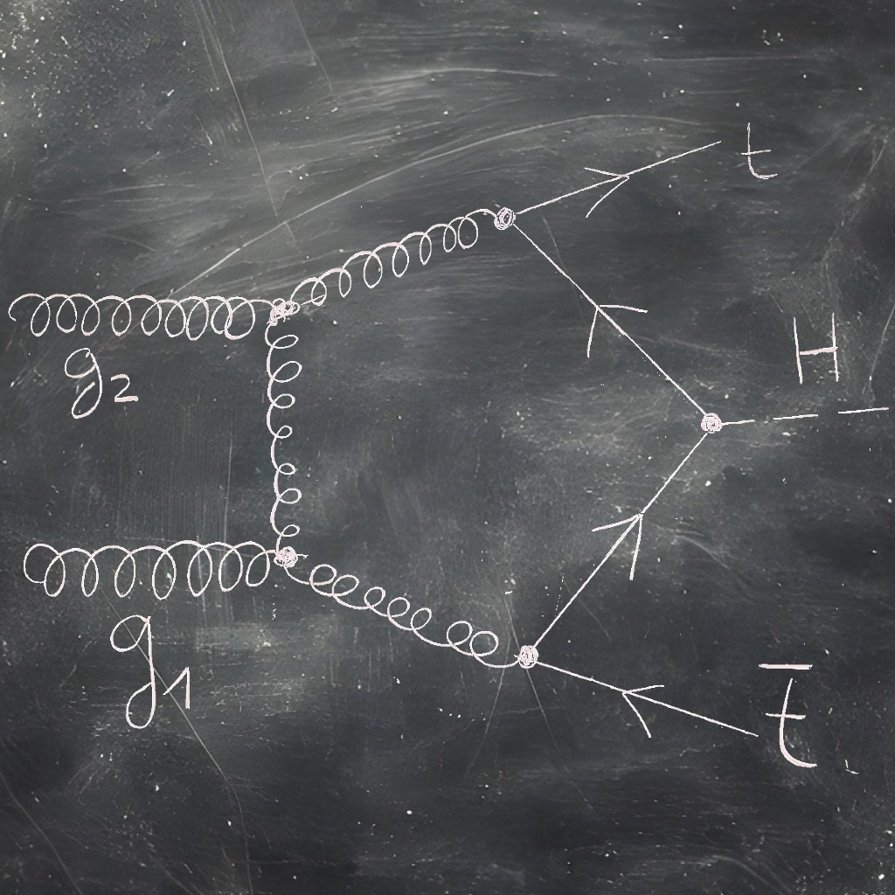

Selected Work
AI Safety · TU Munich & APART Research · 2024–2025
Noise Injection Reveals Hidden Capabilities of Sandbagging Language Models
How do you catch a lying AI? You make it drunk.

AI Safety · Timaeus Research Inc. · 2025–Present
Bayesian Influence Functions for Hessian-Free Data Attribution
How does training data shape model behaviour? We traced it back to individual training samples.

Theoretical Physics · TU Munich · PhD
Feynman Diagram Automation
What is the origin of mass? I drew thousands of cartoons to find out.